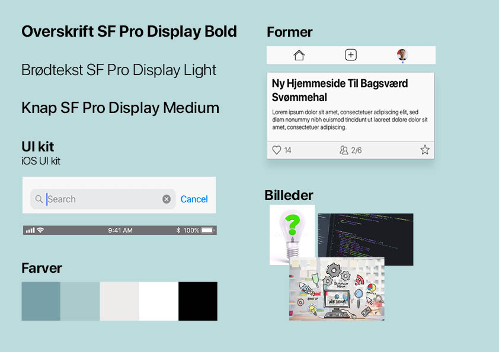
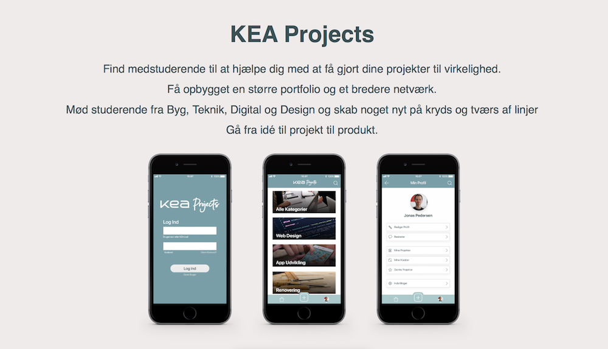

Introduktion
Vi skulle udvikle en app-prototype for KEAs ledelse, der gerne så en app, der kunne gøre det nemmere, sjovere og federe at studerende på KEA, men appen skulle også gerne kunne udvides til flere institutioner/markeder.
Den direkte målgruppe var de studerende på KEA, og den indirekte målgruppe var KEAs ledelse.
Idé
Vi startede med at lave et experience map. Ud fra det kunne vi udvælge hvilke idéer til apps, der skulle gå videre i som kandidater.
Experience Map

Udvælgelse af idé
Vi valgte at gå videre med 3 idéer:
KEA Projects
Med KEA Projects kan de studerende nemt omdanne deres idéer til projekter og finde de nødvendige kompetencer blandt alle KEAs studerende. Byg, Teknik, Digital og Design kan gennem appen mødes på kryds og tværs af linjer for at skabe noget nyt.
KEA Projects er en super simpel og enkel app, hvor de studerende selv opretter projekter, der giver dem mere erhvervserfaring, opbygger deres portfolio og skaber et bredere netværk.
Hvis man, som studerende bruger KEA Projects får man mere erhvervserfaring, man får opbygget en større portfolio, og man får skabt et bredere netværk. Det er alle vitale elementer for at de studerende bliver bedre rustet til fremtidens erhvervsliv.
KEA Hub
KEA Hub er samlingspunktet for dagligdagens liv på KEA. Det er her, du kan tjekke din mail, se dit skema og dine afleveringer samt tjekke hvilke kommende aktiviteter der foregår på KEA. Appens hovedformål er at erstatte Fronter, når man bare vil tjekke noget og helt erstatte Google Sheets skemaet.
KEA Help
KEA Help er meget enkel, hvilket er dens styrke. Appen er, som navnet indikerer, til for at hjælpe dig, når du er i nød. Dog er det reelt ikke appen, der hjælper dig, men derimod de andre elever og tutorer. Idéen er, at hvis man sidder med en opgave og er gået i stå eller mangler den helt rigtige kode, for at opgaven bliver lækker, så logger man ind, poster et opslag (opretter en sag), og så venter man spændt på, at en anden elev eller tutor går ind og hjælper en.
Proces
Paper-protoype - KEA Projects
Paper-protoype - KEA Hub
Paper-protoype - KEA Help
Udvælgelse af idé
Ud fra benchmarking af de 3 idéer samt vurdering af potentiale for videreudvikling, valgte vi at forstætte med:
KEA Projects.
Udvidet Paper-protoype - KEA Projects
Da vi havde valgt en idé at fortsætte med lavede vi endnu en paper-prototype for at teste nogle nye funktioner.
Styletile

Det færdige produkt
KEA Projects

App ikon
Prøv appen:
Kompetencer
I forbindelse med denne opgave har jeg, helt eller delvist, opnået kompetencer inden for følgende:
- App design
- Experience Map
- Ideate (design charette)
- Research på markedet (NABC)
- Business Model Canvas
- Paper-prototype
- Hifi-prototype
- Tænke-højt tests
- Aktivitetsliste og feature-set list
- Datakodning
- Benchmarking
- Adobe XD
- Grundlæggende User Experience